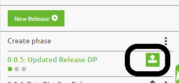

microlearning/crashcourse-platform-deploy-setup-deployment-plan
Setting up a deployment plan
In this microlearning we will focus on the various options to create and edit properties i.e. property management.
Should you have any questions, please contact academy@emagiz.com.
- Last update: February 4th 2021
- Required reading time: 10 minutes
1. Prerequisites
- Basic knowledge of the eMagiz platform
- Understand eMagiz releases in basics
- Have a environment where you can add releases and that is operational to try out the deployment plan
2. Key concepts
This micro learning centers around the Deployment plan. The deployment plan is a series of steps that need to be executed on a TAP environment to make the release defined active. Active in a sense that all changes made to the release compared to the running environment before executing the deployment plan are applied effectively.
The Deployment plan is defined in the Deployment Plan section under Deploy. Each Test, Acceptance and Production environment have their own plan, and across an environment the plan may vary. The Deployment plan is executed from the Release itself, using the options that a Release has.

3. Defining the Deployment plan
Below is a screenshot of a very basic Deployment plan. In the next section we'll take a look at the options available for configuration. These are referred to as steps, and can be added with the button New as can be seen below.
3.1 Enable or disable triggers
One of steps is to disable all triggers that are defined in the Manage phase. Running a deployment plan means certain flows are stopped, new ones depployed and entire runtime might be stopped and started. Depending on the alerting approach, specific alerts will be triggered during execution which are to be regarded as false positive alerts. Making this step the first one of any depployment plan would prevent this from happening. At the same time, you can enable these triggers as the last step in any deployment plan.
3.2 Deploy flows
For every runtime or connector, the actions gon the flows can be defined. Hereunder the options available for this step. Note that only changed, deleted or new flows will be handled in any option.
- Install (updated) flows from that container
- Stop all flows from that container
- Start all flows from that container
- Remove all old flows from that container
3.3 Restart runtime
In specific cases, a entire runtime can be just restarted. During larger deployment this helps to cleanup the metaspace section of the memory allowing more flows to be deployed effectively. After a restart, more capability exist for that.
3.4 Manual steps
All the above options are automated steps. In case a specific step needs to be taken before any next automated step needs to be taken, a manual step can be added. The description helps to describe it, and the deployment steps will halt at this part. It is however often used for pre-deployment and post-deployment reminders.
3.5 Keep the deployment plan up to date
The follow ways will help to keep the plan up to date:
- Use the Default plan option to handle 90% of all cases so that every new runtime is automatically added
- Copy the plan to the next environment to align all plans in the same way.
- Ensure to have a Prepare deployment step in your work definition (sprint) and improve the depployment at each iteration
4. Assignment
Go to your personal environment, and try to add a deployment plan for your environment. Experiments with all options, and ensure to run the deployment plan at least once. Be so familiar with the plan that you will use this approach to refresh your environment at all time.
5. Key takeaways
- The deployment plan is part of the Release Management feature set of eMagiz
- Using the deployment plan, you are alway sure that the release defined is the release that actually runs on any environment (notably the production environment)
- The deployment plan is a must have to deploy all the changes in an active release on a enviroment
- Keep the plan up to date is easy, and takes away the manual effort to deploy flows on the different runtimes.
6. Suggested Additional Readings
If you are interested in this topic and want more information on it please read the helptext provided by eMagiz when executing these actions.
7. Silent demonstration video
This video demonstrates how you could have handled the assignment and gives you some context on what you have just learned.